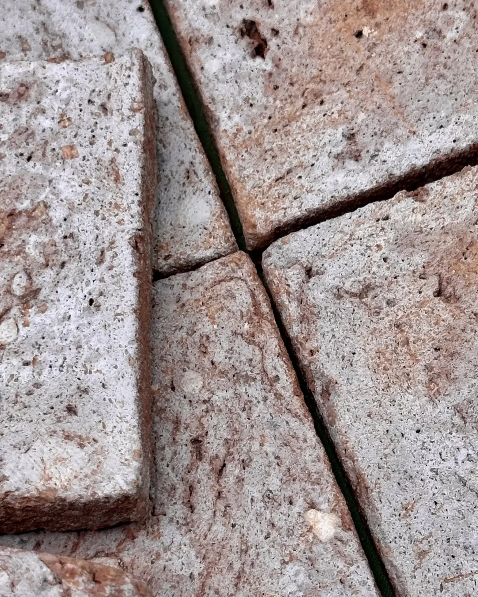
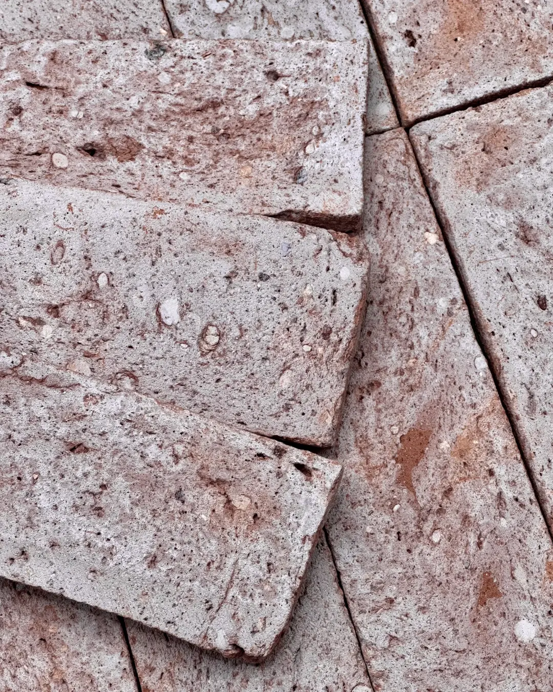

1. Preparação da base
A superfície precisa estar limpa, nivelada e livre de poeira, gordura ou resíduos de tinta. Em paredes novas, aguarde a cura completa do reboco — geralmente entre 21 e 28 dias — antes de iniciar a aplicação. Superfícies muito lisas ou pintadas podem precisar de um chapisco ou primer para melhorar a aderência.
2. Escolha da argamassa
Para revestimentos cerâmicos como o Brick, recomenda-se argamassa colante do tipo AC-II ou AC-III, com boa flexibilidade e resistência à umidade — especialmente importante em áreas externas ou expostas a variações de temperatura. Misture sempre seguindo as proporções indicadas pelo fabricante, evitando misturas muito líquidas, que comprometem a aderência.

3. Técnica de assentamento
Aplique a argamassa com a desempenadeira dentada, trabalhando em pequenas áreas para evitar que ela resseque antes de assentar as peças. Use espaçadores para manter as juntas uniformes e verifique o nivelamento com frequência — pequenos ajustes são muito mais fáceis nos primeiros minutos do que depois da cura.
Como cada peça do Brick é batida à mão, é normal haver pequenas variações de tom entre lotes. Misture peças de caixas diferentes antes de aplicar — isso distribui a variação natural de forma uniforme pela parede, em vez de concentrá-la em blocos. Esse é um dos deslizes mais comuns na instalação — veja outros no nosso guia de erros comuns na instalação de Brick.
4. Rejunte e acabamento
Respeite o tempo de cura da argamassa indicado na embalagem antes de rejuntar — normalmente entre 24 e 72 horas. Um rejunte com leve contraste valoriza a textura de cada peça; um tom mais próximo cria um efeito mais uniforme. Remova o excesso com uma esponja levemente úmida antes que sequem por completo.

5. Selagem e manutenção
Por ser um material poroso, o tijolinho aparente se beneficia de um impermeabilizante específico para cerâmica, aplicado depois da cura total do rejunte — isso facilita a limpeza e protege contra manchas e umidade. No dia a dia, um pano levemente úmido já resolve; evite produtos ácidos ou abrasivos, que podem desgastar o acabamento com o tempo. Para uma rotina completa de cuidados, veja nosso guia de limpeza e manutenção de pisos cerâmicos rústicos.